# Scaling function - I use this a lot in models. We want to 'scale' the covariates
scale2 <- function(x) {
mx <- x - mean(x)
sdx <- sd(x)
if (sdx == 0) {
out <- mx
} else {
out <- mx/sdx
}
return(out)
}Let’s talk about R packages. You know them, you love them, and you probably have way too many installed. You are familiar with install.packages() and have heard of CRAN. But, what are packages? To me, they are just a way of organizing your stuff, and by stuff I mean your scripts, data, documentation, and even reports. When we talk about packages, most people think of those downloaded from CRAN, and you might have seen some from GitHub. However, I think packages don’t get enough credit, and don’t get used as often in simpler scenarios. I first learned about packages in 2018, and gave my first workshop shortly after with RLadies GNV (you can check the slide deck here, although it might be a tiny bit outdated).
Bundling your code in an R package provides consistency, a structure recognized and followed by several folks in the community, and gently pushes you to write documentation. Whether the documentation is any good or not, I think that is up to you. Here are a few examples where I think packages are useful:
You created a set of utility functions specific to your work that you keep using over and over again.
You created functions or workflows that are now also used by your colleagues.
You built a pretty impressive data analysis workflow and would like to make it shareable in a way that other people can understand it.
You came up with a neat data set useful for small examples and you’d like to make it available to others along with some example code.
In general, you will notice that the key component here is the sharing part. Packages are a good way to share code. I think this goes hand in hand with version control and GitHub, but if tackling that also feels like too much, you are not alone! You can build packages without hosting them on GitHub, but I strongly recommend you don’t delay this for too long.
So you have functions somewhere… Let’s build an R package
Many people have written brilliant blog posts about getting started with R packages, and I highly recommend the R packages Book! These are the places where I learned, and I have shared links at the bottom of this post.
Think of this guide as your source for building a quick and dirty R package, no perfection here, and perhaps not as much attention to detail as we would like! But also, I just want you to get started! And hopefully, this is enough to peak your curiosity and you’ll fall down the R packages rabbit hole.
Find yourself a function:
Got a function you use a lot? Bring it on…
Introducing devtools
My first introduction to building R packages was with writing R extensions, if that was also your experience, I’m sorry. Introducing devtools: Tools to Make Developing R packages Easier , that is literally their description and here is the package website.
Install the devtools package and load it:
install.packages("devtools")
library(devtools)Create your package
You will notice in the package chatter, that devtools loads another package called usethis, which has several of the functions we will use today. The tough part: think of a package name. Once you have your name, create the package:
usethis::create_package("the/path/to/where/you/want/to/save/and/the/package/name")usethis is very chatty, so don’t get scared by the output. Your package will open in a new session.
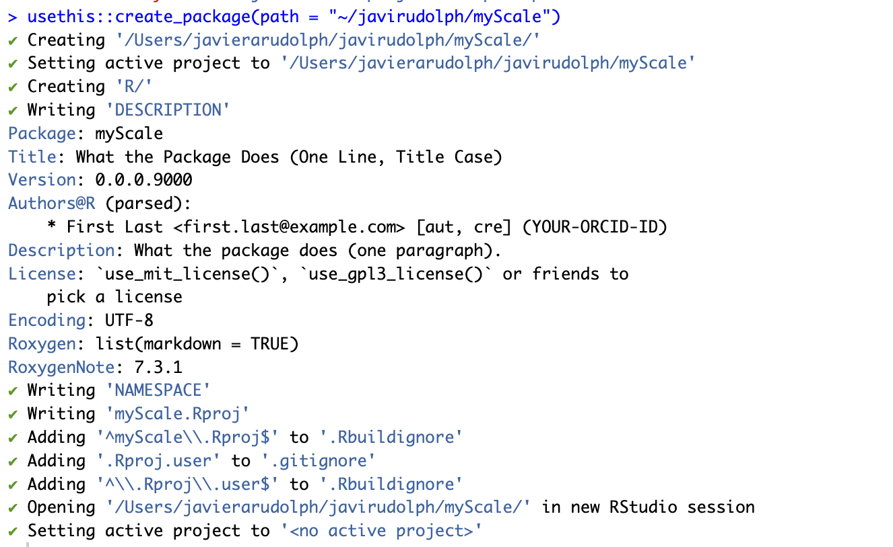
You will notice it opens in a new session, and you can check by looking at the project icon at the top right of RStudio.
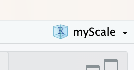
Basic package structure
You will also notice that your package has been built with a few default files:
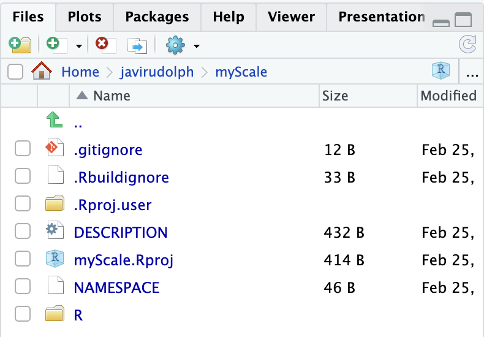
The .gitignore and .Rbuildignore are hidden files that RStudio and Git can use when building the package (things to ignore, and for now, we are ignoring them). But we will check out the other ones:
NAMESPACE: don’t edit this one. It basically is your package’s rulebook and get’s filled in automatically when we use
roxygen2and write documentation. This file lists the functions in your package that are available to the user.DESCRIPTION: your package’s resume, the information of what it does, who made it, and very important, what other packages is your package using, these are called dependencies. You can open and explore this file now. You could change your package’s title, description, authors, etc. I don’t go into too much detail on this here, but Ch9 in the R packages book will give you all the info you need.
R folder - this is where you will find all your functions.
That is the basic structure of a package. Now, let’s fill it in.
Adding your function
Remember the scaling function? we are going to add it to the package, and document it!
usethis::use_r("scale2")This will automatically open the scale2.R script (it either creates it or just opens it if it existed). Now, copy your code to it. Save it and run a check(). This function checks that the package is working and follows the structure.
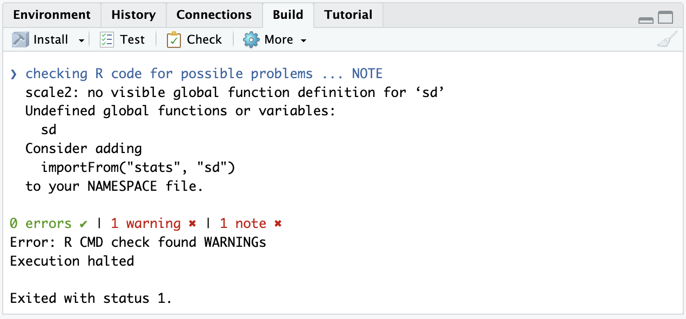
Oh interesting! what is this?? We get a warning a note. Well, you see, my scaling function is using two other functions:
The
meanfunction is frombaseR and so we don’t get any warnings here.But the
sdfunction is from the packagestats.
This tell me, we need to import these, and actually, you will see that the error gives us a suggestion importFrom("stats", "sd"). First, edit the code to make sure we use the package::function notation in the right spot.
scale2 <- function(x) {
mx <- x - mean(x)
sdx <- stats::sd(x)
if (sdx == 0) {
out <- mx
} else {
out <- mx/sdx
}
return(out)
}Then, to add dependencies we continue to use the usethis package. You will notice this adds the package to the imports section from the DESCRIPTION.
usethis::use_package("stats")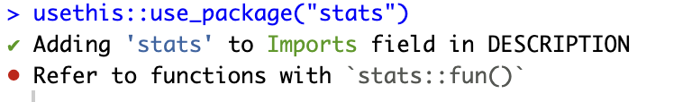
When you open the DESCRIPTION, notice the imports section. Also note that I have already edited some of the information here such as the title, description, and author.
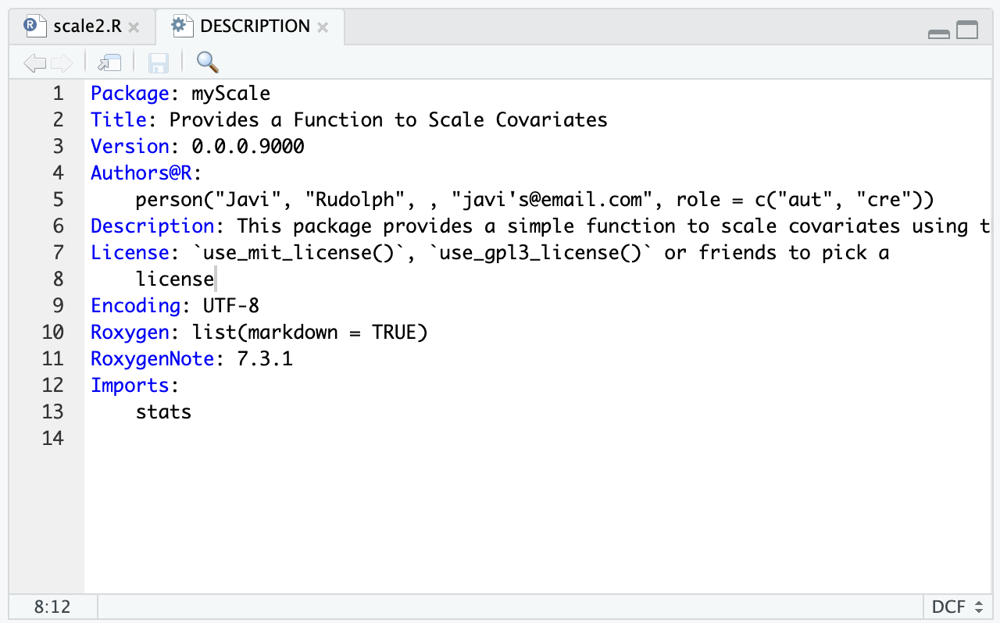
If we run the check again, you will notice the note is gone but we still get a warning. why?
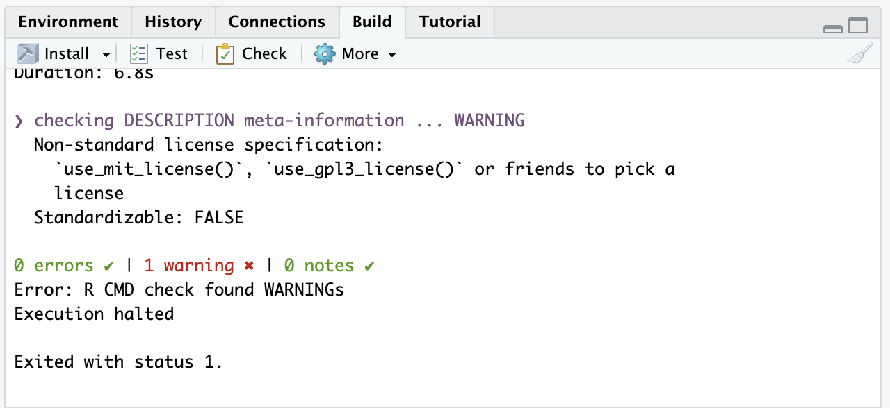
A license! our package doesn’t have a license. The warning also gives us a hint, so for now we don’t delve into the details of which license to pick, but we will use a pretty common one, the MIT license:
usethis::use_mit_license()This function creates a new document, a LICENSE document, with standard information for licensing. This becomes extra important for the sharing purposes we discussed at the beginning. As an individual, probably and MIT license is fine. If you are getting to the point of publishing packages for your company, you might want to check with them on specifics.
‘Build’ your package
We’ve got our package structure, our basic function, we added a dependency… maybe this works? Let’s try. We go to the ‘Build’ pane in RStudio, click ‘More’ and ‘Load All’. This loads your package, and your functions, sort of calling library() and let’s you use your functions within the session. This is cool! but, when I try to use the autocomplete, I don’t get the option to use my function? why??
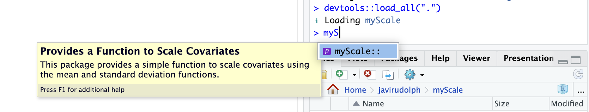
We are missing a key step in packages and that is Documentation.
Documenting your function
We need to write the comments, the description, what is our function doing, and more importantly, we need to export the function so that it is available to the users! So, we open our function’s script, you can open it manually or type usethis::use_r("scale2") in the console. Go to your function, click on the first line, and then go to the Code menu > Insert Roxygen Skeleton:
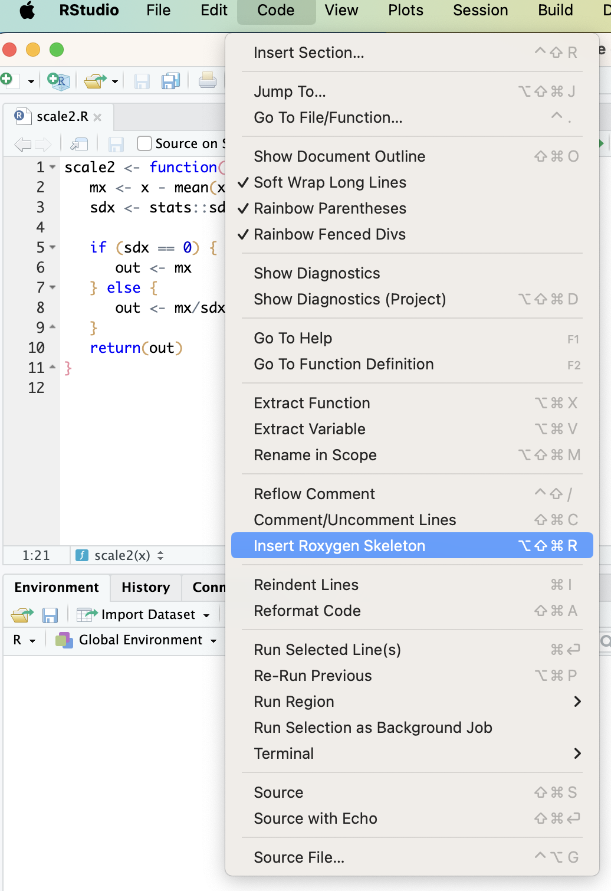
Once you add this, you will notice there are a lot of comments before your function begins. This is the basic structure to document your function. You can edit the title and provide descriptions to the arguments. The @export tag allows your function to be written into the NAMESPACE file so it is available to the user.
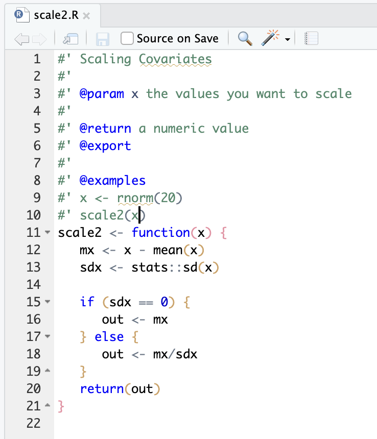
Now, we document our function! We go to the ‘Build’ pane in RStudio, click ‘More’ and ‘Document’. You can also do this from the console with the document() function, or even with a keyboard shortcut.
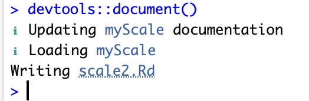
Go check the NAMESPACE (it should now have a new line with your new function name). You should also notice that your package now includes a man/ folder, which contains all the documentation files written by roxygen2. We did it! There it is! You’ve built a package. Almost
Final steps
We do another check from the Build panel. Pass with flying colors!
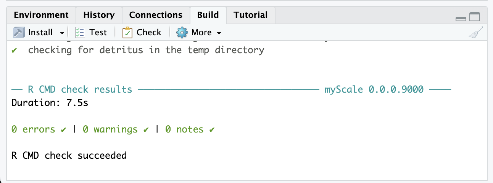
We’ve got a package! Final steps - We are going to install the package. Either from the Build pane, or with devtools::install(). This installs the package locally in your computer, and now you are ready to open a new session, call your package with the library function and get to use it. Note this is a new session, not associated to any projects, and we are able to access our function to use it, and also get the description and information we documented.
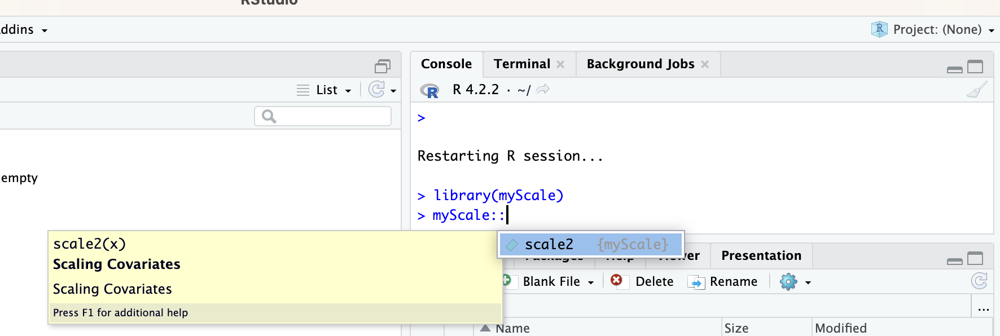
Recap
So, if you have made it all the way! Congratulations! You created a minimal R package, or at least get an idea of how this works. Essentially, these are the steps.
- Create the package -
usethis::create_package - Edit the DESCRIPTION with the package information and your name or authors
- Add a license
- Add a function -
usethis::use_r - Document your function - Code > Insert Roxygen Skeleton
- Run a
checkand add any dependencies if needed or edit your code - Done -
installyour package
Future steps
I barely scratched the surface here and I didn’t cover two things that are quite important, but also sometimes daunting:
- Incorporating version control and using GitHub
- Adding tests to make sure your package works the way it should
Sometimes, I feel like adding GitHub is too much to begin with, specially when you already have all the code you want for a package, and you just really want to be able to use it locally. When you start thinking of sharing it with others, I highly recommend you invest the time on version control with Git and host your package on GitHub. If you are interested, I have a short blog post on Git and GitHub. Once you get your local computer set up, you really only need a couple of functions to share your package on GitHub:
# Start version control
usethis::use_git()
# Upload to GitHub
usethis::use_github()Testing is crucial and should be your immediate next step so it becomes a habit: create function > test function.
My recommendation is to go read Ch1 and then Ch5 of the R Packages Book. This will give you a good overview of the whole thing. Then, you can dive deep into any of the chapters as you encounter situations where you need to know more.
When I was starting, I found Karl Broman’s R package primer very useful too. However, with all the new updates, I would suggest the book as a first resource, and then searching the web for more specific case examples or questions.
Have fun making packages!
Citation
BibTeX citation:
@online{rudolph2025,
author = {Rudolph, Francisca Javiera},
title = {R Packages for Chaos Control},
date = {2025-02-24},
url = {https://javirudolph.github.io/posts/2025-02-24-on-packages/},
langid = {en}
}
For attribution, please cite this work as:
Rudolph, Francisca Javiera. 2025. “R Packages for Chaos
Control.” February 24, 2025. https://javirudolph.github.io/posts/2025-02-24-on-packages/.